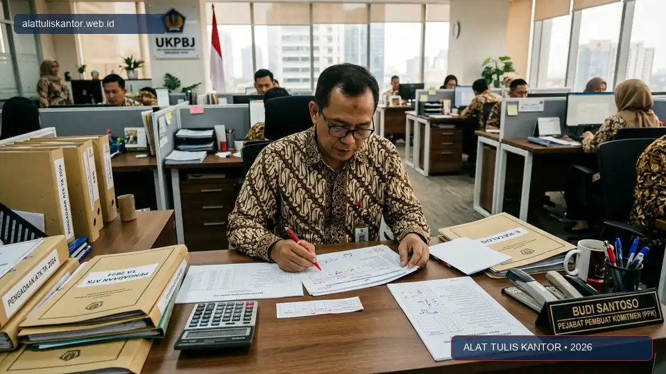
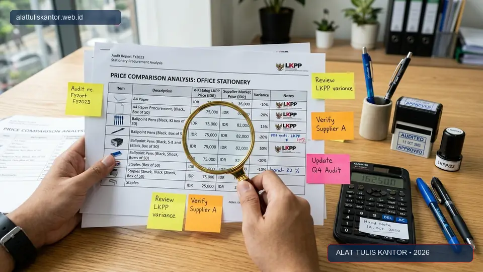

Khawatir temuan audit BPK akibat mark-up Harga Perkiraan Sendiri (HPS) belanja ATK adalah kecemasan yang wajar dirasakan pejabat pengadaan dan Pejabat Pembuat Komitmen (PPK), mengingat konsekuensi dari temuan semacam ini bisa berdampak pada reputasi hingga sanksi administratif dan hukum. Namun, banyak instansi pemerintah yang sebenarnya sudah memiliki HPS berisiko tanpa menyadarinya, karena tanda-tanda kerawanan ini sering kali tidak disadari sampai proses audit pemeriksaan fisik dan berkas benar-benar berlangsung.
Artikel ini membahas lima tanda HPS belanja ATK yang berisiko terkena temuan mark-up BPK dalam skema pengadaan ATK LPSE, sekaligus cara memperbaikinya sebelum proses tender atau e-purchasing berjalan lebih jauh. ATK Prima Distribusi siap membantu instansi Anda mendapatkan referensi harga yang transparan dan valid melalui WhatsApp di 0889-8964-3555.
Kepatuhan Regulasi Pengadaan: Berdasarkan Perpres Pengadaan Barang/Jasa Pemerintah dan Perka LKPP, HPS berfungsi sebagai batas tertinggi penawaran yang sah serta alat evaluasi kewajaran harga, bukan sekadar formalitas syarat administratif tender.
Ringkasan 5 Tanda HPS Berisiko Temuan Mark-Up BPK
Lima tanda HPS belanja ATK yang berisiko terkena temuan mark-up BPK adalah:
- HPS hanya disusun berdasarkan satu sumber penawaran: Tidak adanya pembanding harga pasar membuat nilai HPS tidak objektif dan rentan dianggap mark-up sepihak.
- Tidak ada dokumentasi tertulis mengenai metodologi dan tanggal survei harga: Bukti survei harga yang hilang atau tidak bertanggal akan langsung dianggap tidak akuntabel oleh tim auditor.
- Harga yang digunakan sudah usang (lebih dari 6 bulan): Menggunakan data lama tanpa penyesuaian kondisi fluktuasi pasar terkini menghasilkan estimasi yang menyimpang dari harga wajar riil.
- HPS jauh lebih tinggi dibanding harga di e-katalog LKPP: Selisih signifikan tanpa dasar justifikasi teknis yang sah menjadi sorotan utama audit BPK.
- Tidak ada kesesuaian antara spesifikasi teknis dan dasar harga: Menggunakan dasar harga barang berkualitas premium padahal spesifikasi yang diminta dalam dokumen tender hanya barang standar.
Memperbaiki kelima aspek fundamental ini sebelum proses pengadaan diajukan ke Pokja Pemilihan atau Pejabat Pengadaan dapat secara signifikan mengurangi potensi risiko temuan audit di kemudian hari.
Mengapa HPS Menjadi Fokus Utama Pemeriksaan Audit BPK
HPS menjadi acuan batas atas kewajaran harga dalam proses pengadaan barang dan jasa pemerintah. Oleh karena itu, tim audit Badan Pemeriksa Keuangan (BPK) maupun Inspektorat secara rutin memeriksa metodologi penyusunannya untuk memastikan tidak ada indikasi penggelembungan harga (mark-up) yang merugikan keuangan negara.
Ketika metodologi penyusunan HPS tidak jelas, bukti survei tidak valid, atau tidak dapat dipertanggungjawabkan secara matematis dan yuridis, hal ini menjadi celah utama yang paling mudah diidentifikasi sebagai temuan dalam Laporan Hasil Pemeriksaan (LHP). Selain risiko pengembalian kelebihan bayar kas negara, temuan ini juga dapat memicu pemeriksaan lebih lanjut terkait indikasi persekongkolan tender.
5 Tanda HPS Berisiko dan Cara Memperbaikinya
Tanda 1: HPS Hanya dari Satu Sumber Penawaran
Jika HPS disusun hanya berdasarkan satu surat penawaran dari satu toko atau distributor tunggal tanpa pembanding, hal ini menjadi indikasi kuat kurangnya objektivitas dalam penyusunan harga. Auditor akan mempertanyakan apakah harga tersebut mencerminkan harga pasar yang kompetitif.
Cara Memperbaiki: Selalu gunakan minimal tiga sumber referensi harga berbeda dari distributor resmi atau penyedia terverifikasi sebelum menetapkan HPS final, lalu hitung rata-rata harga pasar yang wajar setelah dikurangi keuntungan dan pajak sesuai ketentuan.
Tanda 2: Tidak Ada Dokumentasi Metodologi Tertulis
HPS yang hanya menyajikan tabel angka akhir tanpa kertas kerja (working paper) yang menjelaskan bagaimana angka tersebut diperoleh sangat sulit dipertanggungjawabkan saat diperiksa auditor.
Cara Memperbaiki: Buat dokumen pendukung tertulis (Berita Acara Survei Harga) yang mencatat sumber data, nama toko/distributor, link e-commerce/e-katalog, tanggal survei dilakukan, rincian ongkos kirim, margin keuntungan penyedia, serta rumus perhitungan rata-rata yang digunakan.
Tanda 3: Harga Dasar Sudah Usang
Menggunakan data harga survei yang sudah berusia lebih dari 6 bulan tanpa penyesuaian terhadap kondisi pasar terkini berisiko menghasilkan HPS yang tidak mencerminkan harga wajar saat pengadaan dieksekusi.
Cara Memperbaiki: Lakukan survei ulang mendekati waktu pelaksanaan pengadaan, idealnya tidak lebih dari 1 hingga 2 bulan sebelum dokumen pengadaan diunggah ke sistem LPSE atau sebelum paket e-purchasing dibuat.

Tanda 4: HPS Jauh Lebih Tinggi dari Harga E-Katalog
Jika HPS yang disusun jauh melebihi harga yang tercantum di e-katalog LKPP untuk merek, tipe, dan spesifikasi yang setara, hal ini akan langsung terlihat mencurigakan bagi tim audit BPK yang memiliki akses ke database e-katalog nasional yang sama.
Cara Memperbaiki: Selalu lakukan benchmarking langsung dengan harga tayang di e-katalog LKPP. Jika terdapat selisih harga (misalnya karena faktor lokasi geografis atau biaya kirim kepulauan), dokumentasikan alasan objektif dan analisis kewajaran harga tersebut secara tertulis dalam nota dinas penetapan HPS.
Tanda 5: Ketidaksesuaian Spesifikasi dengan Dasar Harga
Menggunakan harga produk dengan spesifikasi lebih tinggi (misalnya pulpen gel premium atau kertas 80 gsm bermerek internasional) sebagai dasar HPS, namun menetapkan spesifikasi teknis yang lebih rendah (pulpen standar atau kertas 70 gsm ekonomis) dalam Kerangka Acuan Kerja (KAK) menciptakan ketidaksesuaian yang sangat mudah dideteksi saat uji petik barang fisik.
Cara Memperbaiki: Pastikan seluruh harga referensi survei benar-benar merujuk pada produk dengan spesifikasi teknis, merek, ukuran, ketebalan, dan standar sertifikasi TKDN yang identik dengan yang dipersyaratkan dalam dokumen tender.
Tabel Checklist Evaluasi Risiko HPS Sebelum Finalisasi
| Aspek yang Diperiksa | Kondisi Berisiko (Temuan BPK) | Kondisi Aman & Akuntabel |
|---|---|---|
| Jumlah Sumber Referensi | Hanya 1 sumber penawaran | Minimal 3 sumber referensi kredibel |
| Dokumentasi Metodologi | Tidak ada kertas kerja tertulis | Tertulis lengkap dengan tanggal survei |
| Usia Data Harga Survei | Lebih dari 6 bulan yang lalu | Kurang dari 2 bulan (kondisi terkini) |
| Perbandingan dengan E-Katalog | Selisih signifikan tanpa penjelasan | Sesuai atau ada justifikasi teknis resmi |
| Kesesuaian Spesifikasi KAK | Harga barang premium, spek rendah | 100% identik antara survei dan KAK |
Langkah Proaktif Sebelum HPS Diajukan untuk Persetujuan
- Lakukan self-check mandiri: Periksa kembali kelima tanda risiko di atas menggunakan tabel checklist sebelum dokumen HPS diajukan untuk ditandatangani PPK.
- Minta reviu dari pihak kedua: Libatkan Pejabat Pengadaan atau rekan sejawat internal untuk memberikan second opinion dan meneliti potensi anomali harga sebelum finalisasi.
- Simpan seluruh bukti pendukung survei harga: Arsipkan printout penawaran, tangkapan layar e-katalog beserta tanggal akses, dan formulir survei ke dalam folder terorganisir yang mudah diakses saat jadwal pemeriksaan BPK tiba.
- Update metodologi secara berkala: Ikuti perkembangan regulasi terbaru LKPP terkait pedoman penyusunan HPS barang/jasa dan ketentuan perpajakan PPN 11% / PPh pengadaan pemerintah.
Studi Kasus: Perbaikan HPS di Dinas Kesehatan Kabupaten Grobogan
Dinas Kesehatan Kabupaten Grobogan sempat menerima catatan minor dari tim auditor terkait penyusunan HPS belanja perlengkapan ATK kantor yang hanya bersumber dari satu penawaran toko lokal tanpa pembanding harga pasar yang memadai.
Setelah menerapkan checklist lima tanda risiko di atas dan memperbaiki tata kelola survei harga pada periode anggaran berikutnya, dinas tersebut berhasil menyusun HPS berbasis 3 referensi distributor resmi serta perbandingan e-katalog. Hasilnya, pada pemeriksaan audit tahun anggaran berjalan, dinas tersebut tidak lagi menerima catatan ataupun temuan mark-up, karena seluruh alur perhitungan harga terdokumentasi secara transparan dan akuntabel.
Hasil Positif: Transparansi survei harga tidak hanya menghindarkan instansi dari temuan hukum, tetapi juga menghasilkan penghematan realisasi anggaran belanja operasional hingga 12%.
Cara Mendapatkan Referensi Harga yang Transparan untuk HPS
Untuk mendapatkan referensi harga produk ATK yang transparan, lengkap dengan surat dukungan dan spesifikasi resmi sebagai salah satu sumber penyusunan HPS Anda, kunjungi halaman informasi pengadaan tender kami di panduan tender ATK LPSE.
Anda juga dapat melihat katalog lengkap perlengkapan kantor beserta rincian spesifikasi teknis dan kisaran harga grosir melalui halaman katalog produk ATK kami untuk memudahkan komparasi harga pasar.
Membangun Budaya Kepatuhan dalam Penyusunan HPS
Selain memperbaiki aspek teknis penyusunan HPS, sangat penting bagi setiap instansi untuk membangun budaya kepatuhan yang konsisten di seluruh unit kerja yang terlibat dalam rantai pengadaan. Berikan pembekalan berkala kepada staf pendukung terkait metodologi survei harga yang benar, serta bangun sistem reviu berjenjang sebelum HPS ditetapkan secara definitif oleh PPK.
Instansi yang secara proaktif menerapkan mekanisme self-assessment terhadap risiko HPS mereka sendiri, alih-alih menunggu diperiksa oleh pemeriksa eksternal, umumnya memiliki catatan kepatuhan (compliance record) yang jauh lebih unggul dan dapat melewati proses audit tahunan dengan lancar dan bebas kendala.
Pertanyaan yang Sering Diajukan (FAQ)
Kesimpulan
Kekhawatiran akan temuan audit BPK akibat mark-up HPS dapat diminimalkan dengan mengenali dan memperbaiki lima tanda risiko yang telah dibahas di atas. Dengan metodologi yang transparan, dokumentasi yang rapi, dan data harga yang selalu terkini, HPS belanja ATK instansi Anda dapat disusun secara akurat, hemat, dan aman dari temuan audit.
Butuh referensi harga ATK yang transparan dan siap dukung untuk menyusun HPS instansi Anda? Hubungi tim ATK Prima Distribusi via WhatsApp di 0889-8964-3555 untuk konsultasi pengadaan gratis.